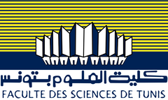
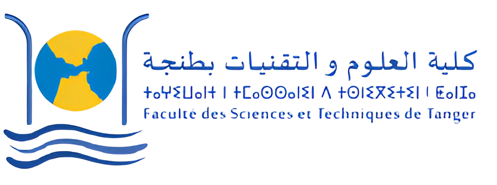
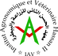
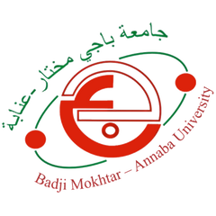
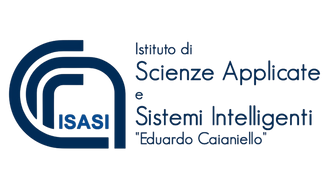
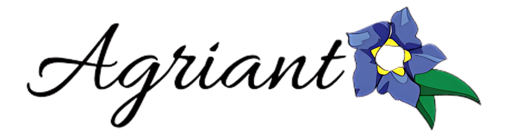
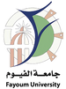
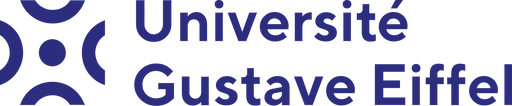
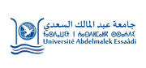
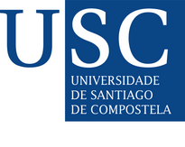

Project Partners
SAVE water is coordinated by the Faculty of Sciences of Tunis, University of Tunis El Manar (FST-UTM) from Tunisia, and brings together 13 partners from 9 countries across the Mediterranean and Europe.
Consortium
Click a partner on the photo below to see who they are and their role in the project.

Coordinator

Faculty of Sciences of Tunis, University of Tunis El Manar (FST-UTM)
Salwa SAIDI
Tunisia
Beneficiaries
Manouba School of Engineering (MSE-UMA)
Imed Riadh FARAH
Tunisia

Faculty of Sciences and Techniques, Tangier, University of Abdelmalek Essaadi (FSTT)
Abdes Samed BERNOUSSI
Morocco

Institute of Agronomy and Veterinary Medicine Hassan II (IAV)
Imane SEBARI
Morocco

University of Badji Mokhtar Annaba (UBMA)
Larbi JABRI
Algeria
Technical University of Berlin (TU Berlin)
Basem ALJOUMANI
Germany

Institute of Applied Sciences and Intelligent Systems — CNR (ISASI-CNR)
Pier Luigi Mazzeo
Italy

Azienda Agricola Agrianto di Maria Consilia Antonelli (Agrianto)
Maria Consilia Antonelli
Italy

Faculty of Agriculture, Fayoum University (FOAFU)
Ali Gaber Mohamed Mahmoud
Egypt
CIRAD — Research Center of International Cooperation in Agronomic Research for Development
Simon Taugourdeau
France

Gustave Eiffel University (UGE)
Pierre-Louis FRISON
France

FCiências.ID — Association for Science Research and Development (FC.ID)
Cristina Cruz
Portugal

Engineering Department of University of Santiago de Compostela (USC)
María Rosa Mosquera Losada
Spain
Associated Partners
Associated partners are involved from the beginning in a participatory approach. They include the Ministry of Agriculture, Water Resources and Fishing (Tunisia), the Agency of Hydraulic Basin of Morocco, the Moroccan Committee of the International Association of Hydrogeologists (CM-AIH), the Topo Mapping Office (Tunisia), the URB Office (Tunisia), the Tunisian Association of Geomatics (ATG), Acquedotto Pugliese (Italy), the Agriculture Directorate in Fayoum (Egypt), the Exceptronictech office (Tunis, Tunisia) and the Department of Forestry of Manouba (Tunisia).